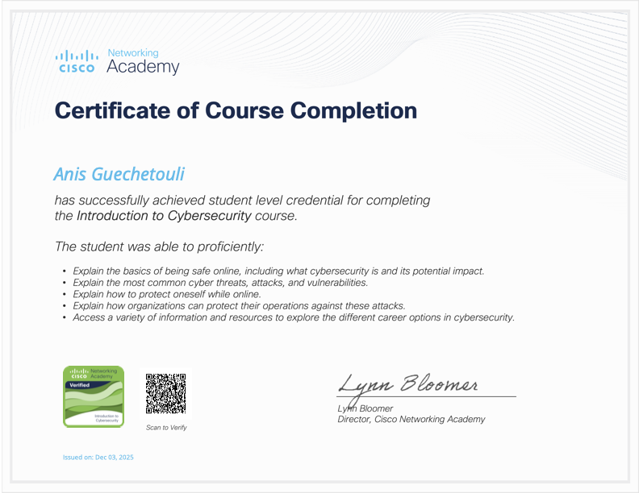

0
Stages & Projets majeurs
Étudiant BTS SIO - Option SISR (2ème année)
Passionné par la sécurité informatique, j'aime comprendre les systèmes, repérer les failles et renforcer les infrastructures pour protéger les données.
0
Stages & Projets majeurs
0
Outils cyber maîtrisés
0
Années en BTS SIO
Mon objectif est de devenir spécialiste en cybersécurité et de contribuer à la protection des réseaux et des données face aux menaces actuelles.
IRIS - École supérieure d'informatique
Formation intensive axée pratique et autonomie
1 mois
Stage de 1 mois
Stage de développement web au sein de l’entreprise de transport FastTrack. J’ai participé à la création d’un site web permettant aux clients de contacter l’entreprise et de faire des demandes de renseignements.
Cisco Networking Academy - 2025

Objectifs : pentest, vulnérabilités web/réseau, forensique, sécurisation.
Déploiement d'un partage réseau de stockage distant, préparation des postes, support IT, montage PC et documentation technique.
Transformation d'un ancien PC en mini data center, ajout SSD 1 To, déploiement de services Docker et configuration réseau local/distant.
Application desktop de recherche YouTube + téléchargement audio MP3, via API YouTube Data, yt-dlp, FFmpeg et interface Tkinter.
Page dédiée à l'épreuve E5 avec présentation du contexte, des compétences mobilisées, des outils utilisés et des situations professionnelles à détailler.
Page dédiée à l'épreuve E6 pour présenter tes projets cybersécurité, les analyses menées, les solutions retenues et les compétences associées.
L'objectif principal de cette RP est de fournir aux arbitres et officiels un environnement numérique isolé, sécurisé et hautement disponible dans le vestiaire.**Les livrables attendus sont :